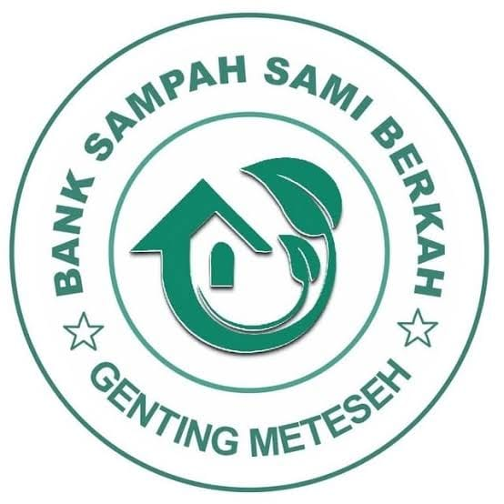
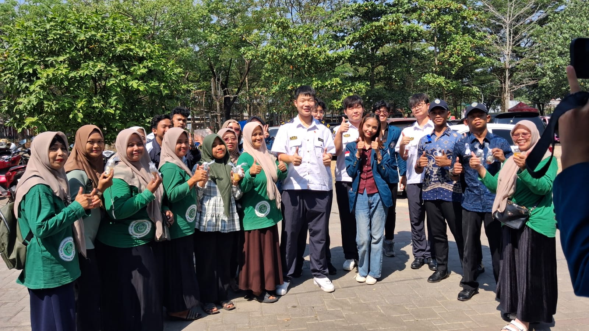
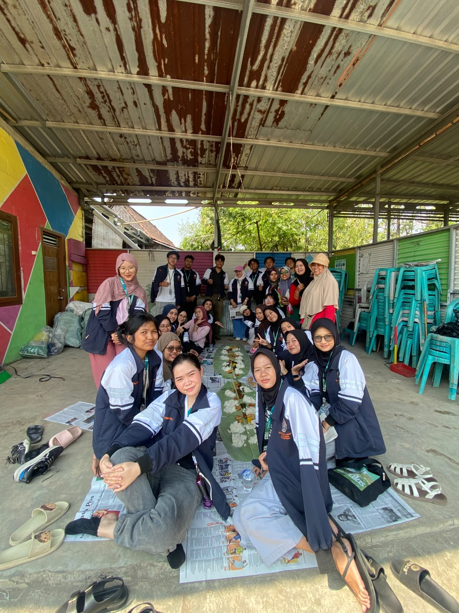

Jl. Genting Baru No.02/06, Meteseh, Kec. Tembalang, Kota Semarang, Jawa Tengah 50271
Bank Sampah Sami Berkah berawal dari program Pengabdian Masyarakat FISIP Universitas Diponegoro (UNDIP). Awalnya pembentukan bank sampah dilakukan sebagai kebutuhan dokumentasi kegiatan sehingga Bu Aniqoh menyiapkan nama, banner, serta visi dan misi hanya dalam satu malam. Setelah seluruh persiapan selesai, kegiatan Bank Sampah Sami Berkah mulai dijalankan dan resmi beroperasi pada 19 Oktober 2019.
Kehadiran Bank Sampah Sami Berkah menjadi awal perubahan lingkungan RW 06 Kelurahan Meteseh yang sebelumnya dikenal sebagai kawasan kumuh. Melalui semangat gotong royong masyarakat dan dukungan berbagai pihak, bank sampah mampu menciptakan lingkungan yang lebih bersih, sehat, serta memperoleh berbagai bantuan sarana dan prasarana kebersihan untuk menunjang kegiatan operasional.
"Terwujudnya Bank Sampah yang Manfaat dan Barokah, yang mampu menciptakan lingkungan bersih, hijau, sehat serta dapat meningkatkan perekonomian masyarakat."
Pada hari Kamis, 16 Juli 2026, Ibu-Ibu pengurus Bank Sampah Sami Berkah berkesempatan untuk berpartisipasi aktif dalam kegiatan bertaraf internasional yang diselenggarakan oleh Universitas Diponegoro. Acara ini merupakan bagian dari rangkaian program Sustainable Development Goals (SDG's) dan Summer Course yang mempertemukan civitas akademika, mahasiswa asing, serta praktisi lingkungan lokal.
Dalam kesempatan berharga tersebut, para pengurus dibekali pengetahuan mendalam mengenai pembuatan dan pemanfaatan Eco Enzyme—cairan serbaguna hasil fermentasi limbah organik dapur seperti sisa kulit buah dan sayuran. Pembuatan Eco Enzyme ini menjadi solusi praktis tingkat rumah tangga untuk menekan volume sampah organik yang masuk ke TPA sekaligus menghasilkan cairan organik kaya manfaat sebagai pembersih alami, pupuk, hingga disinfektan.
Kolaborasi ini menegaskan posisi Bank Sampah Sami Berkah yang tidak hanya aktif mengelola sampah anorganik, tetapi juga terus memperluas kapasitas dan inovasinya demi terwujudnya pemukiman yang mandiri dan berkelanjutan.

Foto Bersama Pengurus Bank Sampah Sami Berkah di Acara Summer Course UNDIP 2026
Pada hari Sabtu, 11 Juli 2026, Bank Sampah Sami Berkah mendapatkan dukungan penuh dari para mahasiswa yang tergabung dalam KKN Tematik Universitas Diponegoro (UNDIP) Tim 124 Tahun 2026. Kehadiran generasi muda ini membawa semangat baru dalam upaya pelestarian lingkungan di wilayah Genting Kelurahan Meteseh, Kota Semarang.
Dalam kegiatan operasional mingguan tersebut, para mahasiswa terjun langsung ke lapangan untuk membantu proses pemilahan sampah anorganik yang dibawa oleh para nasabah. Tidak hanya sekadar membantu memilah, tim KKN Tematik 124 juga turut serta memberikan edukasi mengenai pentingnya memisahkan sampah sejak dari rumah guna mempermudah proses daur ulang dan meningkatkan nilai ekonomis dari sampah itu sendiri.
Aksi nyata ini ditutup dengan momen kebersamaan yang hangat melalui tradisi makan bersama beralaskan daun pisang. Sinergi positif antara pengurus Bank Sampah, warga, dan mahasiswa UNDIP ini diharapkan dapat terus berlanjut demi mewujudkan lingkungan RW 06 yang bersih, sehat, dan mandiri secara ekonomi.
📸 Pantau terus kegiatan kami di instagram @bank_sampah_sami_berkah

Foto Bersama & Momen Kebersamaan KKN Tematik UNDIP Tim 124 di Bank Sampah
| Aspek | Keterangan |
|---|---|
| Hari Operasional | Sabtu |
| Jam | 09.00–12.00 WIB |
| SOP | Saldo hasil penjualan bisa langsung dicairkan atau ditabung. |
| Jenis Sampah | Harga (Rp) |
|---|---|
| Ember Campur | 500 - 1.200 |
| Ember | 800 |
| Gelas K | 2.000 |
| Gelas B | 5.000 |
| Kerasan/Mainan | 200 |
| Tembaga | 189.500 - 204.500 |
| Al Panci | 34.500 |
| Al RC | 28.500 |
| Al Monel | 23.500 |
| Kuningan | 119.500 |
| Jenis Barang Elektronik | Harga (Rp) |
|---|---|
| TV Tabung 14" | 19.500 |
| TV Tabung 21" | 39.500 |
| Kulkas | 99.500 |
| Ac | 274.500 - 499.500 |
| CPU | 64.500 - 99.500 |
| Mesin Cuci | 29.500 - 49.500 |
| Printer | 500 - 1.500 / kg |
| Handphone | 2.500 - 19.500 / biji |
| Jenis Sampah | Harga (Rp) |
|---|---|
| Kardus | 1.600 |
| HVS Putih | 1.000 - 2.500 |
| Marga | 400 |
| Buram | 900 |
| Sak Semen | 2.000 |
| Pelumpung/Cone | 500 |
| Besi | 4.900 |
| Besi Tipis / C3 | 2.300 |
| Kaleng | 2.300 |
| Seng | 1.200 |
| Paku | 3.500 |
| Filter Oli | 2.000 |
| Jenis Sampah | Harga (Rp) |
|---|---|
| PET Kotor | 2.000 |
| PET Bersih BP | 6.500 |
| PET Bersih BM | 5.500 |
| PET Warna Kotor | 300 |
| PET Warna Bersih | 500 |
| Galon Lemineral | 300 / biji |
| Galon Lemineral B | 3.500 |
| Polos/Kecap | 0 (Gratis) |
| CY | 600 |
Bank Sampah Sami Berkah telah memiliki SK resmi dari Kelurahan Meteseh dan terdaftar di Dinas Lingkungan Hidih Kota Semarang. Pengembangannya didukung oleh FISIP UNDIP serta mengikuti program USAID CCBO pada tahun 2022 yang menghasilkan hibah kontainer bank sampah. Sejak 2023 kegiatan operasional berpindah ke lokasi kontainer tersebut.
| Nama | Jabatan |
|---|---|
| Lurah Meteseh | Pelindung |
| Ketua RW VI | Penasehat |
| Tim Pengabdian Masyarakat FISIP UNDIP | Pembina |
| Aniqotunnafiah, S.Pd., M.Ak. | Ketua |
| Sa'adah | Sekretaris |
| Lina Siswanti | Bendahara |
| Aliyah & Mulyani | Divisi Penimbangan |
| Muhanik & Misrohati | Divisi Pembukuan |
| Sri Hartini & Isti'anah | Divisi Pemilahan |
| Tri Suko & Umi Kulsum | Divisi Pengolahan Sampah |
| Indra Yudi & Hakim | Divisi Maggot |
Datang langsung setiap hari Sabtu pukul 09.00–12.00 WIB ke Bank Sampah Sami Berkah, lakukan pendaftaran, bawa sampah yang telah dipilah, kemudian hasil penimbangan akan dicatat dalam buku tabungan. Informasi lebih lanjut dapat menghubungi contact person pengurus atau datang langsung ke alamat Bank Sampah Sami Berkah.